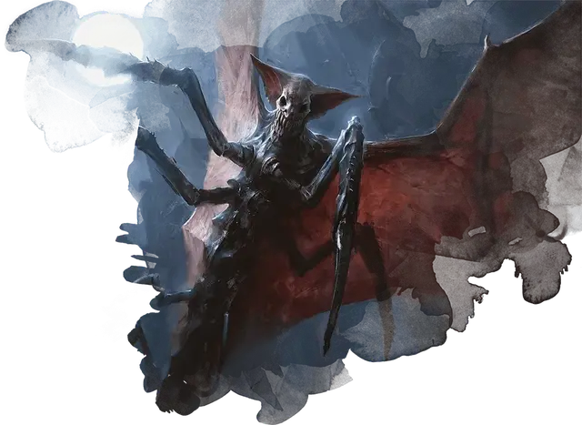

Летающий ужас
Flying Horror
Средняя Аберрация, нейтрально-злая

Класс Доспеха 16 (природный доспех)
Хиты 49 (9к8 + 9)
Скорость 30 футов, летая 60 футов
| мод | спас | ||
|---|---|---|---|
| СИЛ | 9 | −1 | −1 |
| ЛОВ | 20 | +5 | +5 |
| ТЕЛ | 12 | +1 | +1 |
| мод | спас | ||
|---|---|---|---|
| ИНТ | 2 | −4 | −4 |
| МДР | 15 | +2 | +2 |
| ХАР | 16 | +3 | +3 |
Уязвимость к урону излучение
Иммунитет к состояниям испуг
Чувства тёмное зрение 120 футов, пассивное Восприятие 14
Опасность 3 (700 опыта)
Бонус мастерства +2
Особенности
Безумие страха. Ужас совершает с преимуществом броски атаки против испуганных существ.
Чувствительность к солнечному свету. Находясь на солнце, ужас совершает с помехой броски атаки и проверки Мудрости (Восприятие), полагающиеся на зрение.
Действия
Когти. Рукопашная атака оружием: +7 к попаданию, досягаемость 5 футов, одна цель. Попадание: 8 (1к6 + 5) рубящего урона плюс 14 (4к6) урона психической энергией.
Пугающий визг (перезарядка 5–6). Ужас визжит. Каждое существо в пределах 30 футов от него, которое может его слышать, должно преуспеть в спасброске Мудрости Сл 13, иначе оно будет испугано им на 1 минуту. Испуганное существо может повторять спасбросок в конце каждого своего хода, оканчивая эффект на себе в случае успеха. Если спасбросок существа успешен или эффект для него закончился, существо становится невосприимчивым к Пугающему визгу ужаса на следующие 24 часа.
Описание
Ужасающее зло крадется, летает и рыщет в тёмных уголках Равники, от глубин подземного города до самых чёрных уголков ночного неба. В совокупности этих существ называют ужасами — разнообразными тварями, скрывающимися во тьме и воплощающими в себе самые глубокие страхи жителей Равники. Все они злые существа со скудным разумом и сверхъестественной хитростью.
Известно, что по меньшей мере три гильдии заставляют ужасов служить себе. Для Дома Димир ужасы сеют страх и отчаяние среди граждан и совершают убийства или похищения хорошо защищенных целей. Для Культа Ракдоса ужасы — просто ещё одно оружие в арсенале ужасающих и шокирующих существ, которые могут появиться на сцене. Для Роя Голгари ужасы очищают канализацию и защищают территорию гильдии.
Дом Димир использует все три основных вида ужасов. Культ Ракдоса предпочитает теневых ужасов, а Рой Голгари использует скользящих ужасов.
Ужасы и безумия Равники
Ужасы Равники — это воплощение ужаса и безумия. Вы можете представить эту реальность, используя правила безумия в «Руководстве мастера подземелий».
Всякий раз, когда персонаж проваливает спасбросок от Пугающего Визга летающего ужаса, атаки когтей теневого ужаса или Сводящего с ума присутствия скользящего ужаса, отметьте этот факт. В конце встречи пусть каждый персонаж, проваливший хотя бы один из этих спасбросков, сделает спасбросок Мудрости со Сл 13. При успешном сохранении ничего не происходит. При неудачном спасброске персонаж получает форму безумия из «Руководства мастера подземелий», степень серьезности которой зависит от того, сколько спасбросков этот персонаж провалил во время столкновения, как показано в таблице серьезности безумия.
Степень безумия
| Проваленные спасброски | Безумие |
| 1 | Краткосрочное |
| 2-3 | Долгосрочное |
| 4+ | Бессрочное |
Настройка ужаса
Ужасы имеют некоторые общие типы телосложения, но сильно различаются по другим характеристикам. Форма конкретного ужаса может включать в себя элементы, напоминающие черты дьявола, насекомого или рептилии. Чтобы настроить ужас, выберите базовое существо (летающий ужас, теневой ужас или скользящий ужас), затем бросьте один раз по таблице "Основные характеристики" и один раз по таблице "Вторичные характеристики" (или выберите вариант из каждой таблицы). Добавьте эти черты базовому существу.
Основные характеристики
| к4 | Особенность |
| 1 | Избегание. Если ужас подвергается эффекту, который позволяет ему совершить спасбросок, чтобы получить только половину урона, вместо этого он не получает никакого урона, если он преуспевает в спасброске, и только половину урона, если он терпит неудачу. |
| 2 | Сопротивления урону. Ужас обладает сопротивлением к урону некротической и психической энергией. |
| 3 | Врожденное колдовство. Базовой характеристикой ужаса является Харизма (Сл спасброска от заклинания 13) Он может накладывать следующие заклинания, не требующие материальных компонентов: 3/день: тьма [darkness] |
| 4 | Психический упрек. Когда ужас получает урон от рукопашной атаки, он может использовать свою реакцию, чтобы излучать психическую энергию в радиусе 5 футов. Каждое существо в этой области получает 3 (1к6) урона психической энергией. |
Второстепенные особенности
| к4 | Особенность |
| 1 | Цепкие щупальца. У ужаса четыре щупальца. Каждое щупальце можно атаковать (КД 12, 10 хитов). Уничтожение одного не наносит урона ужасу. Бонусным действием ужас может выбрать целью одно существо, которое он может видеть в пределах 10 футов от себя. Цель должна преуспеть в спасброске Ловкости, иначе будет схвачена ужасом. Сл спасброска и Сл высвобождения из захвата 9). Пока захват не закончится, ужас не может использовать то же щупальце, чтобы схватить другую цель. |
| 2 | Неукротимый разум. Ужас невосприимчив к состоянию очарованный. |
| 3 | Острые чувства. Ужас совершает с преимуществом проверки Мудрости (Восприятие), основанные на зрении, звуке или обонянии. |
| 4 | Зрение разумом. Магическая тьма не мешает тёмному зрению ужаса. |